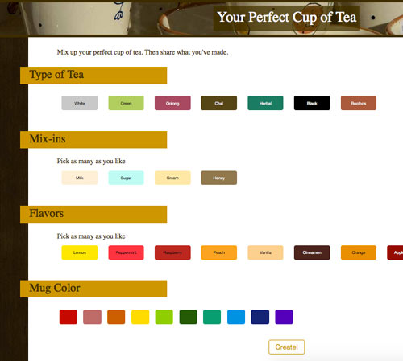
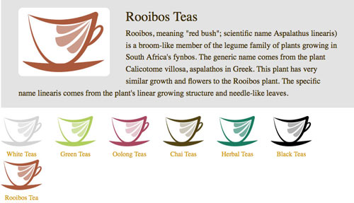

A Site for Tea-Lovers
TeaJoy is a (fictional) teashop emphasizing a warm, value-rich environment with a customizable menu.
Project Features
- Logo Design & Branding
- Reponsive, custom HTML5 and CSS3 Site
- "Your Perfect Cup" tea-customization mini-app
- Custom jQuery & JavaScript content-switcher
Challenges
Dynamic "Perfect Cup" Mini-App

I created an interactive quiz-like feature letting visitors create their own perfect cup of tea. Their choices are displayed in a dynamic shareable pop-up window on completion. Try it out.
Content Switcher

I used a lightweight, jQuery switcher by Cheyne Wallace. This created a smooth interaction and interactivity to organize a large amount of information.
Branding
I created an illustrative, variable width style to mimic the flowing nature of liquid, as well as the joy associated with drinking tea. The natural color pallete reflects TeaJoy’s pure, organic teas.